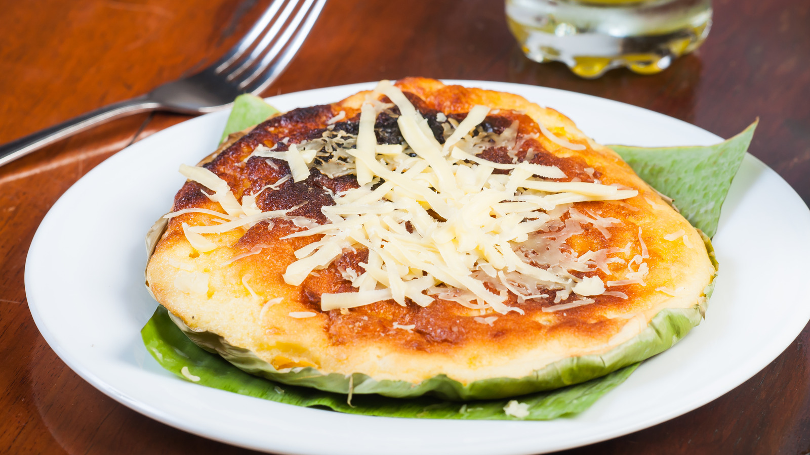

The Heart of Christmas
Welcome to "The Heart of Christmas"
Dive into the magic of the season as we explore timeless Christmas traditions,
fun holiday games, and delicious recipes to brighten your celebrations.
Whether you're looking to learn, play, or cook, we bring the joy and warmth of Christmas straight to you.
| Website Contents | Image | Description |
|---|---|---|
| Traditions | Learn about traditional Filipino Christmas customs celebrated in every holiday. | |
| Games | Enjoy fun holiday games to play with family and friends. | |
| Recipes |  | Discover delicious recipes to make festive dishes and desserts. |
| Songs | Listen to the songs of Christmas and feel the spirit of the holiday. | |
| Motto | Explore the perspective of each member of the team about "Christmas" |

Foods
In Filipino households, preparing traditional cuisines during the Christmas season is an essential part of the holiday celebration. It symbolizes family unity, the sharing of culture, and the rich heritage passed down through generations. Dishes such as lechon, pancit, bibingka, and puto bumbong bring loved ones together around the table, fostering a sense of joy and warmth. The preparation of these special meals reflects the Filipino values of hospitality, love, and the importance of community, making Christmas not just a holiday, but a heartfelt celebration of togetherness and tradition.
Traditions


Filipino Christmas traditions are rich with warmth and joy, reflecting the deep-rooted faith and vibrant culture of the country. Celebrations begin with Simbang Gabi, a series of dawn Masses that lead up to Christmas Eve, fostering community spirit and devotion. The sound of caroling fills the air, as groups visit homes to sing festive songs and spread cheer. On Christmas Eve, families come together for Noche Buena, a hearty feast that symbolizes unity and gratitude. The tradition of parol lighting, with its star-shaped lanterns, illuminates homes and streets, signifying the guiding light of the star of Bethlehem. Gift-giving brings excitement and love, reinforcing bonds between family and friends. Above all, Filipinos celebrate the birth of Jesus Christ, honoring the true reason for the season with reverence and joy.
Games
Filipino Christmas celebrations are known for their lively and fun-filled games that bring families and friends together. Traditional games like Hep Hep Hooray spark excitement with its call-and-response format, while Karaoke sessions fill the air with laughter and singing. Charades and Pinoy Henyo challenge participants’ creativity and wit, creating moments of joy and friendly competition. The game of Bring Me adds a playful twist as players race to find and present random items, making for endless fun and unforgettable memories during the holiday season.